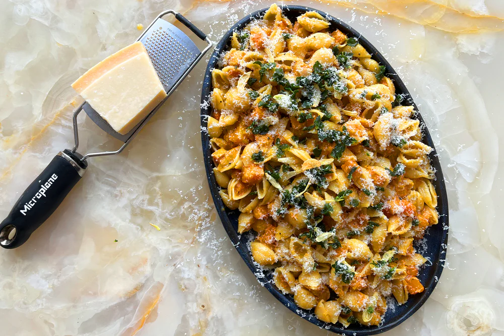

Butternut Squash "Carbonara"
Home

Steps
This is a long way from a traditional carbonara, I know, but it’s very much inspired by the original, so I’m sticking to the name. The key here is to manage the
temperature of the pasta when you stir in the eggs and cheese. If it’s too hot, you’ll get scrambled eggs, so leave the pasta to cool for a minute before the
enthusiastic stirring begins.
Ingredients
- Fine sea salt
- 125 ml olive oil
- 4 garlic cloves, peeles and finely sliced
- 20 gr oregano leaves
- small butternut squash, peeled, pith and seeds removed and discarded, flesh cut into 2cm pieces (630g net weight)
- 1 tsp reshly ground black pepper
- 350g conchiglie, or similar pasta
- 80 gr parmesan, finely grated
- 3 eggs, beaten
Steps
- Bring a large pot of salted water to a boil. Meanwhile, put the oil in a large saute pan on a medium-high heat. Once the oil is hot, add the garlic and oregano, and fry for two minutes, just until the garlic starts to turn golden. Using a slotted spoon, carefully lift out the garlic and oregano and transfer to a small bowl, leaving the oil in the pan.
- Turn up the heat under the pan to high, add the chunks of squash, three-quarters of a teaspoon of salt and the black pepper, and cook, stirring occasionally, for 15 minutes, until the squash is soft and golden brown.
- Drop the pasta into the boiling water and cook for eight minutes. Drain the pasta, reserving about 200ml of the cooking water, then put the pasta in the squash pan. Cook, stirring often, for two minutes, then take off the heat and leave for a minute: you don’t want the pasta to be piping hot.
- Mix the cheese, eggs and three tablespoons of the reserved pasta water in a large bowl; keep the remaining pasta water. Tip the pasta and squash mix into the egg bowl and stir for two minutes, until the pasta is evenly coated in the sauce; if need be, add more pasta water a tablespoon at a time until the sauce turns smooth and silky. Divide between shallow bowls, sprinkle the fried oregano and garlic mixture on top, and serve immediately.